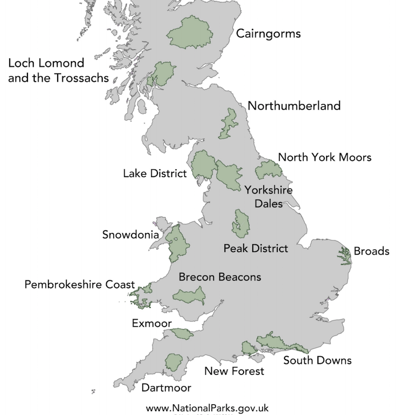

the Bee Lucks Be.
the Bee Lucks Be.
The Kingdom's Protected Wilds: Mapping the UK's 15 National Parks
By Becca Thomas Loux

The above map is a static UK National Parks map, courtesy of the UK National Parks Service. It denotes the official names and boundaries of the United Kingdom's 15 National Parks. Ireland is not included in this map, nor is it part of the same Park System. Click and zoom in the map below to browse a geographical terrain-focused mapbox. MapBox is a framework which allows programmers to embed customizable maps into their websites; this mapbox window gives you access to terrain, geography and protected areas the world over. Countries catetgorize parks systems in various manners: here in the United Kingdom the government designates and protects natural regions either as National Parks or Areas of Outstanding Natural Beauty (AONBs) as well as more local regional and city parks and protected green spaces. Both National Parks and AONB's are denoted upon a close zoom with a small tree marker. This parks-focused map displays those classifications in the UK and shows major natural landmarks like Snowdon Peak, in north Wales which is the highest summit in that country at 1085 meters. It also gives human civilizational context to the open spaces of the UK by showing major roads, cities and infraestructure. Zoom in close enough to a particular lake or forested area and you will see more specific terrain information like lake and river names and elevation lines. Some human recreational and industrial centers are included at a close zoom as well, such as the Northumbrian Water Treatment Compound in the Portrack Marsh Nature Reserve in the North York Moors area or the Warcop Firing Range in the North Pennines AONB. The UK's National Park Service has designated three protected park spaces in Wales: Snowdonia, Brecon Beacons and the Pembrokeshire Coast. Scotland has two official parks south of the highlands, Loch Lomond & the Tressochs and Cairgorms. England's ten National Parks are: Exmoore, Dartmoore, Yorkshire Dales, North York Moors, Lake District, Northumberland, South Downs, Peak District, New Forrest and Broads. (Of course, the map allows you to explore the same data for anywhere else in the world as well.)